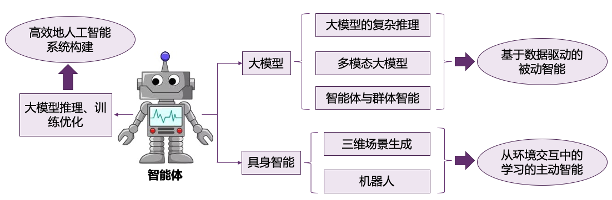

研究小组简介
我目前是清华大学计算机科学与技术系“水木学者”博士后，正在建设一个人工智能研究小组，暂命名为 HamLab。本小组隶属于清华大学胡事民院士领导的 CSCG 实验室。
为什么叫 “Ham”？
Stay hungry, stay foolish
“Ham” 通常指的是美味的“汉堡”，在中文发音上也有“憨”的感觉，蕴含着 “stay hungry, stay foolish” 的精神内涵；同时，希望研究小组的每个人都可以保持对人工智能、计算机视觉、计算机图形学研究中美味 “ham” 的追求。
不忘初心
“Ham” 也是我深度参与的第一个工作的名称（Hamburger, ICLR 2021），它象征着我在科研道路上的起点。我希望小组的每一位成员都能铭记自己最初投身科研的初心，以及在开始时对研究的那份热情。
突破常规
“Ham” 是一个不同于传统命名方式（如 “GuoLab” 或 “HaoLab”）的名称。它打破了常规的命名框架，象征着实验室在研究方向上追求“突破常规”的精神，体现了我们对创新与影响力的不断追求。
研究方向
实验室的研究方向如下图所示，主要包含基础模型、具身智能和人工智能系统。

长期招聘
长期招聘实习生（线下和线上），参与实验室的科研和项目工作。如果你对我们的研究感兴趣，请通过邮件和我联系，并附带简历。优秀的实习生将有机会获得清华大学计算机系的保研推荐资格以及出国推荐等。
- 招收方向：智能系统优化（对系统优化感兴趣，学过高性能计算相关课程或有相关经历）、大模型训练和评估（学习过深度学习和大模型相关课程）、具身智能（学习过机器人或具身智能相关内容）、三维生成（学习过三维生成和计算机图形学）。上述所有方向对编程能力有较高要求。
- 研究生招收：博士生和硕士生通常从表现优秀的本科实习生中遴选；目前（2025.3.20），2026 年入学的博士生名额已确定。
- 团队构成：课题组已有多名来自清华大学计算机系、致理书院、新雅书院以及北京航空航天大学的本科生和研究生。我们欢迎来自不同学校和专业的同学联系。如果我认为我们非常契合，将在三天内回复您的邮件。
- 研究资源：研究组计算资源、数据资源丰富，与国内外顶尖研究机构如 CMU、Stanford、腾讯等合作紧密，并有长期合作。